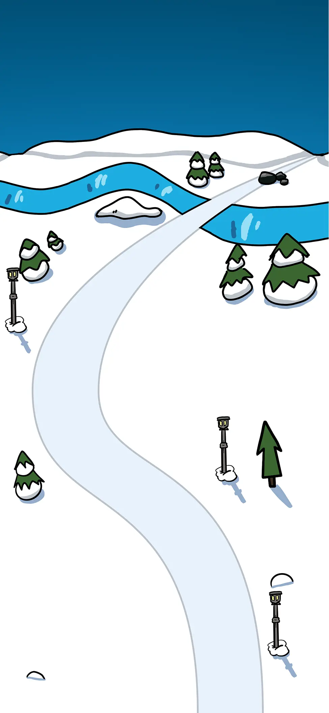
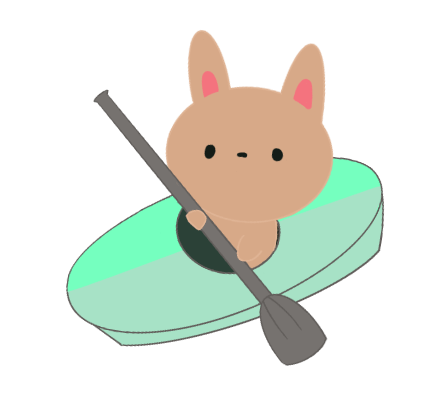
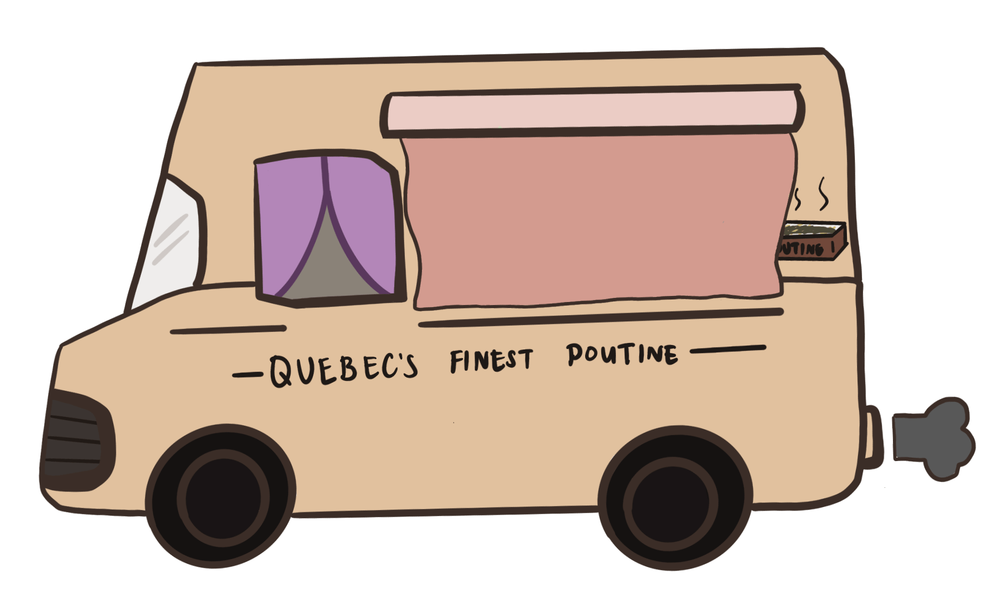
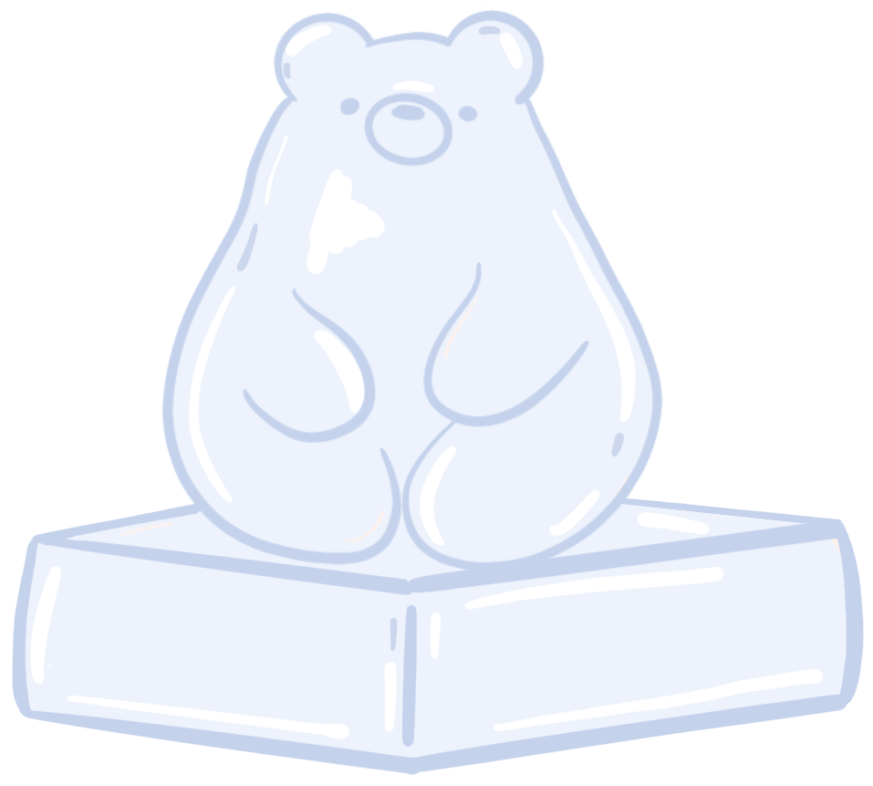
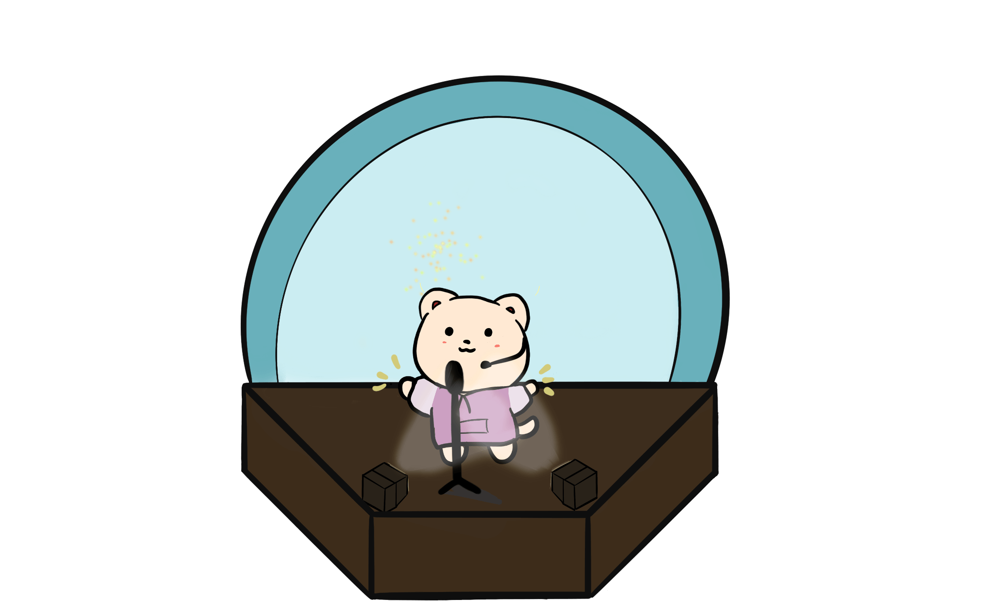
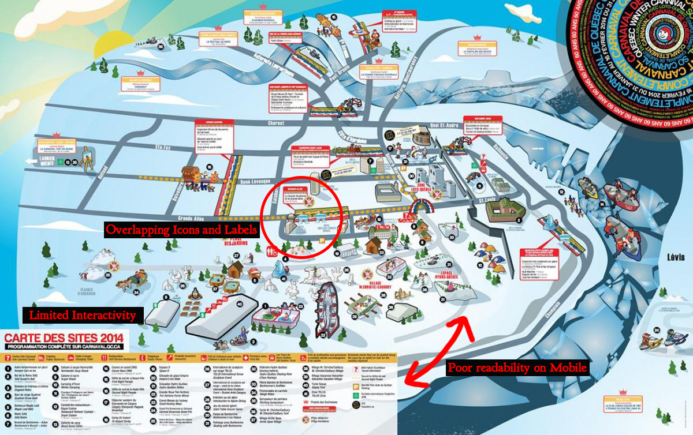
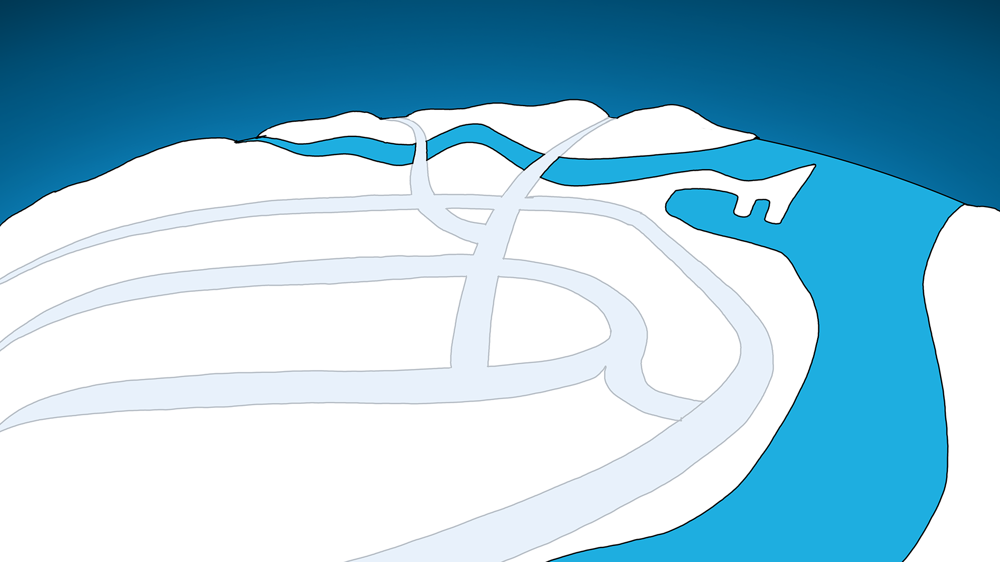
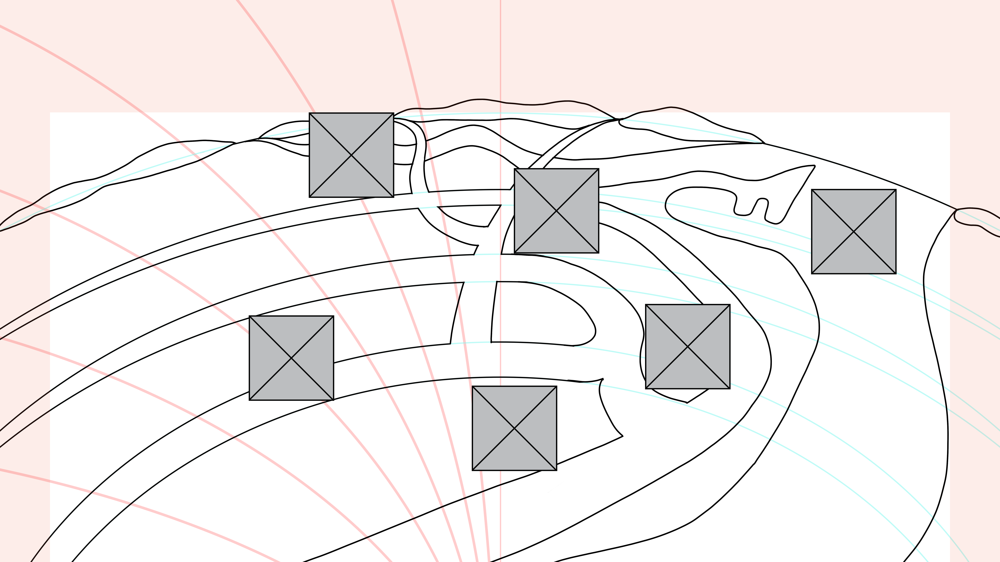
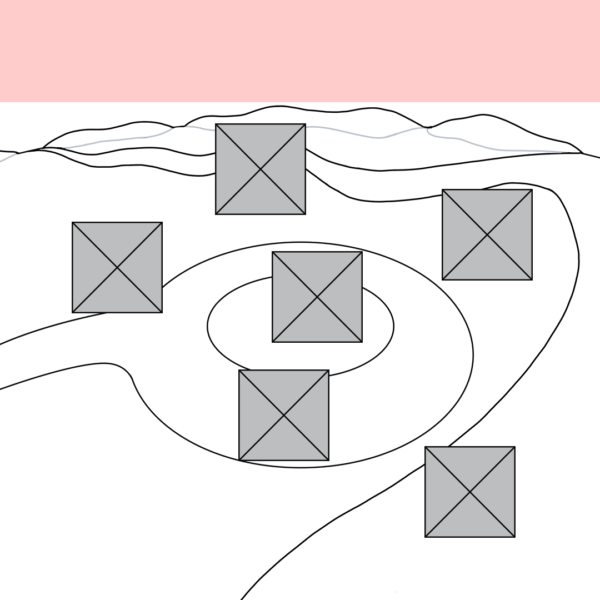

Québec Carnival Dynamic Map
UX/UI Design | Web Development




Project Overview
Role: UX/UI Designer & Front-End Developer
Collaborators
- Max - Lead Front-end Developer
- Irena - Illustrator
- Irina - UX/UI Designer
- Frentzen - Front-end Developer
Tools Used
- Web Development (HTML, CSS)
- Adobe Photoshop
- Figma
Duration: 4 Months (May 2023 - August 2023)
Project Description
The Québec Carnival Dynamic Map was a responsive microsite designed to promote the activities of Carnaval de Québec and encourage ticket purchases among English-speaking tourists. To achieve this, our team created a fun, English-translated, interactive map inspired by the playful style of Disney's Club Penguin, making festival information more accessible, engaging, and easy to explore across devices.
This website was created as part of IAT235 - Information Design at SFU's Interactive Arts and Technology Program. As Lead User Experience Designer and Developer of the interactive map section, my main responsibilities included:
- UX Research
- Wireframing
- Graphic Design
- HTML/CSS Development
- Responsive Web Design
Throughout this project, I aimed to explore the responsive nature of websites and how a map could adapt to the screen ratio.


Objective
The primary objective of the microsite was to increase interest and ticket purchases by conveying the content of each activity through a fun, interactive map in English. However, the original Carnaval de Québec maps, such as the 2014 edition, were visually cluttered and difficult to interpret. Key issues included overlapping icons and labels, poor readability on mobile devices, and limited interactivity for more information. This made it challenging for users to understand what the festival offered without a physical map.
Why It Matters
A confusing map impacted the festival's experience because users struggled to find activities, the festival lost opportunities to highlight key aspects of the activities, and poor navigation reduced motivation to attend or purchase a ticket.

Description of Solution
Goals
- Present festival activities in a clear, engaging, and accessible format.
- Create a responsive map that adapts to mobile, tablet, and desktop.
- Use a playful visual style to appeal to families and tourists.
Iterations
During our team ideation meeting, we noticed the cluttered nature of Carnaval de Québec's traditional map. Afterwards, I proposed the creation of a user-friendly interactive map as the microsite's key feature. The decision to use a cartoon-style map heavily inspired by Club Penguin had the Carnival's winter theme and all-age community in mind. First, I used Photoshop to sketch a low-fidelity mockup of the map to receive feedback from the team and class.
With adjustments based on the feedback, I moved into wireframing in Figma for smartphones, tablets, and desktops. The wireframes help guide the interactive icon placement while scripting the HTML and CSS. The first iteration used the initial sketch for the map and work-in-progress characters.



An Issue I Fixed
One user interface issue that was found in the second iteration of our solution was the lack of affordance provided before hovering over icons. Users did not realize the elements were clickable. To solve this, I helped add a subtle looping bounce animation to the CSS, which separated the icons from the background image.

Final Outcome
The Québec Carnival Dynamic Map delivered a playful, winter-themed interactive map that made the Carnaval de Québec experience more accessible and engaging for English-speaking tourists. The illustrated map adapted seamlessly across mobile, tablet, and desktop to ensure that users can explore festival activities on any device. Animated icons improved activity visibility and interest for users. Overall, the project successfully transformed a cluttered static map into a responsive, intuitive, and enjoyable digital experience that supported the goal of encouraging exploration and ticket interest.
Takeaways
The Québec Carnival Dynamic Map improved my skills in responsive web design, cross-device layout planning, and designing for clarity and usability. Working closely with illustrators and developers taught me how to communicate design intent effectively and iterate quickly based on feedback. If I were to continue developing the microsite, I would focus on adding more activity locations and Google Maps integration. This project reinforced the importance of responsive designs for the web and how the execution can be done in a playful direction.